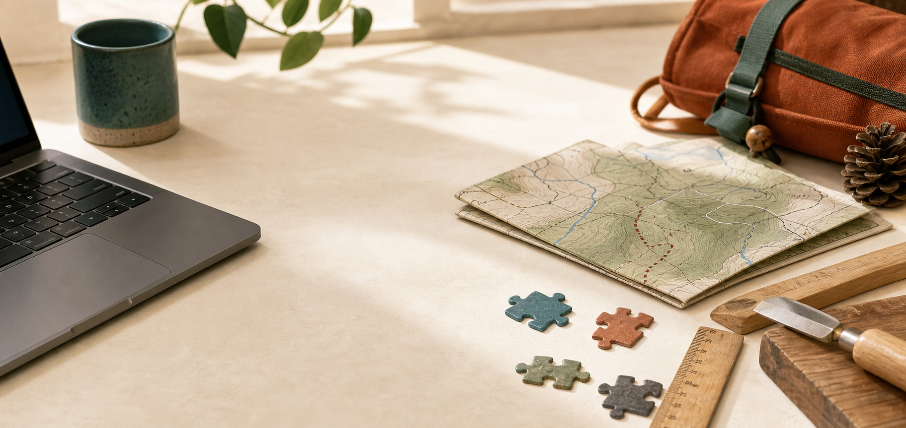

Collaboration
Comfortable working in groups, sharing progress, and supporting teammates through project development.
Computer Science Student
I am using my computer science studies, project work, and upcoming internship experience to prepare for a future in big tech. This portfolio is where I plan to collect what I build, what I learn, and the next steps I want to take as a developer.

About Me
My current focus is to keep growing as a computer science student while preparing for future applications to larger technology companies. I want this website to become a living record of my progress, from early class projects to more polished work that I can eventually share through repositories and project writeups.
Outside of programming, I enjoy hiking, carpentry, and solving puzzles. Those interests shape the way I want to approach software: patiently, practically, and with a willingness to keep refining the solution.
Skills and Experience
Comfortable working in groups, sharing progress, and supporting teammates through project development.
Looks closely at problems, asks useful questions, and connects technical choices to project goals.
Builds confidence by taking on new tools, concepts, and responsibilities with steady follow-through.
Keeps development work structured so teams can track tasks, communicate clearly, and present results.
I have school experience with group-based programming and presenting project work in front of class, including what the team built and what we learned during development. My next step is to bring that same communication and organization into an upcoming software internship, while continuing to stay connected with the company before the program begins.
My Projects
My next goal for this site is to move class and personal projects into GitHub repositories, add project slides where they help, and keep improving each entry as the work becomes easier to share publicly.
A group project exploring how tide levels may relate to patterns of human activity at a local beach. The project focused on collecting observations, comparing trends, and explaining findings clearly to a class audience.

A game concept demonstrating dynamic non-player character behavior based on learning patterns from the player. The project highlights Rudy's interest in interactive systems, logic, and behavior-driven design.
Contact